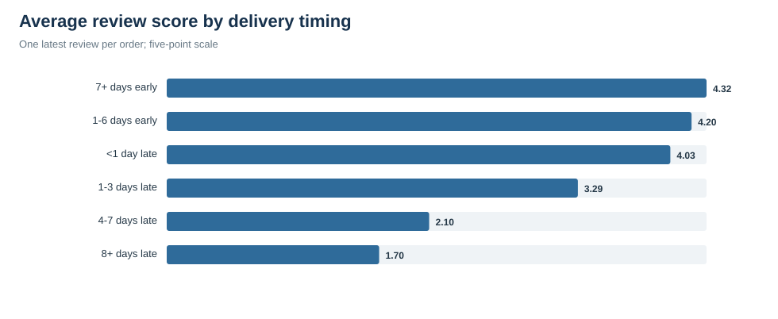
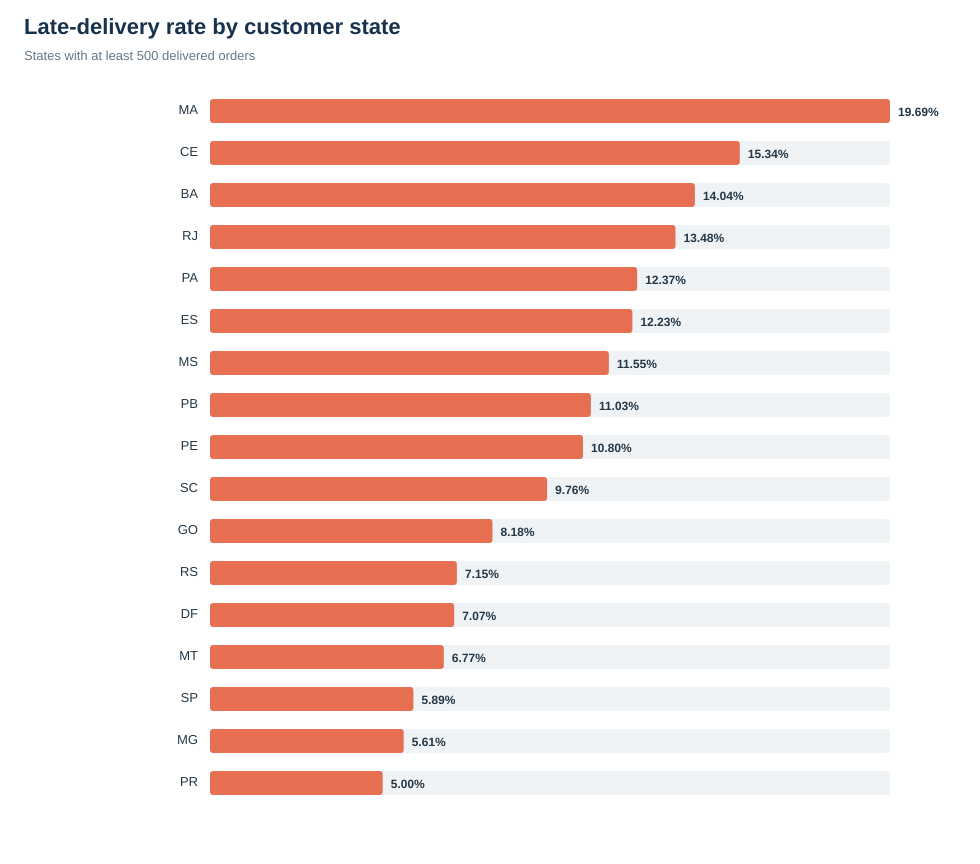
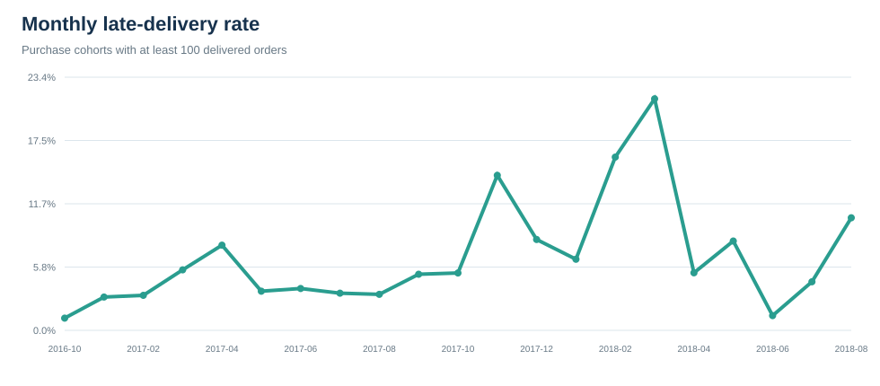

96,455
分析対象の配送完了注文
8.11%
予定日超過率
10.21日
配送日数の中央値
4.16/5
平均レビュー
課題設定
配送完了だけを成果とせず、約束した到着予定日を守れているかを主要KPIとします。事業課題は、遅延による低評価を減らしながら、どの工程・地域・注文特性から優先して改善すべきかを明らかにすることです。
主要な発見
遅延と顧客評価には大きな差があります。
7日以上早着した注文の平均評価は 4.32、8日以上遅延した注文は 1.7 でした。低評価率は 8.98% から 79.29% へ上昇しています。
遅延注文では運送工程の長期化が目立ちます。
配送業者への引き渡し後から顧客到着までの平均は、期限内注文が 7.89 日、遅延注文が 25.68 日です。因果は断定できませんが、監視対象として優先度が高い工程です。
可視化



改善提案
| 優先度 | 施策 | 役割 | 検証KPI |
|---|---|---|---|
| 1 | 配送リスクの早期警告 | 距離・州間配送・重量・商品数・出荷遅れを使い、予定日超過リスクの高い注文を事前に抽出する。 | 予定日超過率、8日以上遅延率 |
| 2 | 配送業者別SLA管理 | 引き渡し後の所要日数をルート別に監視し、長期化した組み合わせを改善対象にする。 | carrier days、P90配送日数 |
| 3 | 約束日の精度改善 | 州・距離帯・重量帯・月別の実績分布から、過度に楽観的な予定日を補正する。 | 予定日内到着率、早着日数と遅延日数の偏り |
| 4 | 遅延時の顧客対応 | 遅延見込み時点で通知し、更新予定日と選択肢を提示する。 | 遅延注文の低評価率、問い合わせ率 |
分析上の注意
本分析は観察データの関連を示すもので、遅延が低評価を引き起こしたという因果効果を証明していません。レビューがない注文と位置情報が取得できない注文があり、距離は郵便番号ごとの緯度経度平均から計算した概算です。複数出品者の注文は取引金額が最大の出品者を代表として使用しました。